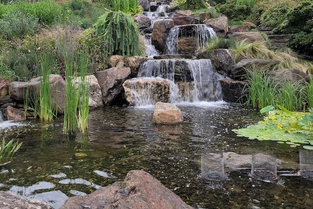

Ponds
Our ponds are: 1) designed to provide the best possible habitat for your guests, 2) designed with modern and attractive shapes, and 3) made with reliable techniques and the use of the highest quality materials. We offer 200, 400, 800 and 1200 liter tanks.
Plants
 There are three broad categories of aquatic plants: submersible plants, floating plants, and riparian plants.
There are three broad categories of aquatic plants: submersible plants, floating plants, and riparian plants.
Fishes
 The existing variety is enormous, but we will focus only on freshwater fish. There are two types, tropical and cold water. 1) Tropical water fish: They are the most colorful and showy. They will serve us “only for indoor ponds”, located in a warm place in our house or apartment (the temperature should never drop below 20°C). Among them we find viviparous fish such as Guppies, Platys, Xiphos and Mollies; and oviparous fish such as Bettas. 2) Cold water fish: They allow us to place our pond outside. Among the best known species are Goldfishs, Koys, Barbos Schubertis, Chinese Neons, Paradises, etc. All these species tolerate the cold well, but they have a hard time on days of high temperatures.
The existing variety is enormous, but we will focus only on freshwater fish. There are two types, tropical and cold water. 1) Tropical water fish: They are the most colorful and showy. They will serve us “only for indoor ponds”, located in a warm place in our house or apartment (the temperature should never drop below 20°C). Among them we find viviparous fish such as Guppies, Platys, Xiphos and Mollies; and oviparous fish such as Bettas. 2) Cold water fish: They allow us to place our pond outside. Among the best known species are Goldfishs, Koys, Barbos Schubertis, Chinese Neons, Paradises, etc. All these species tolerate the cold well, but they have a hard time on days of high temperatures.